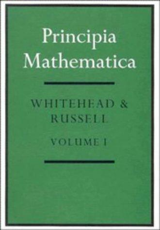
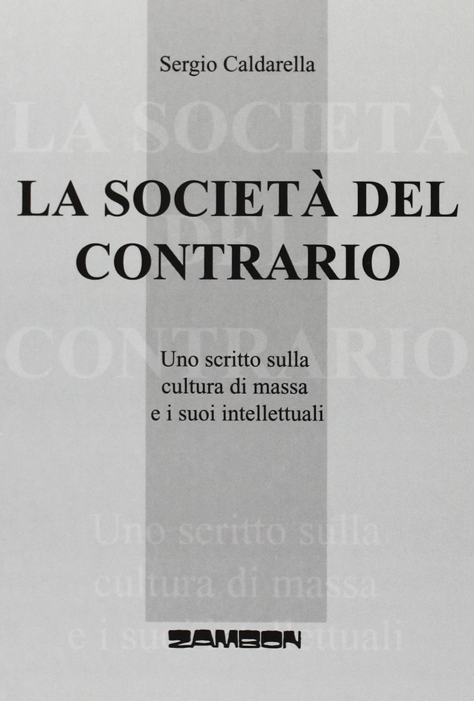
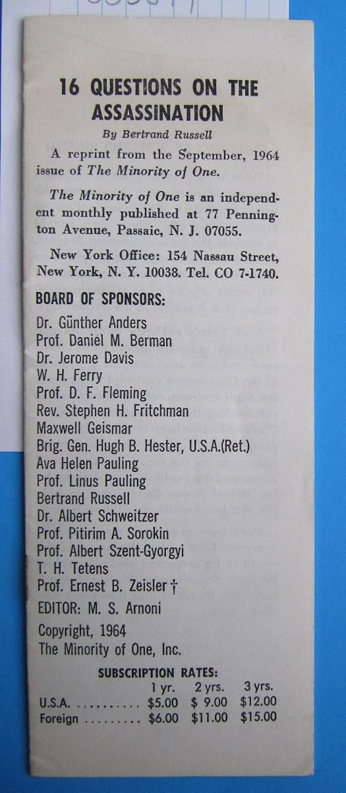
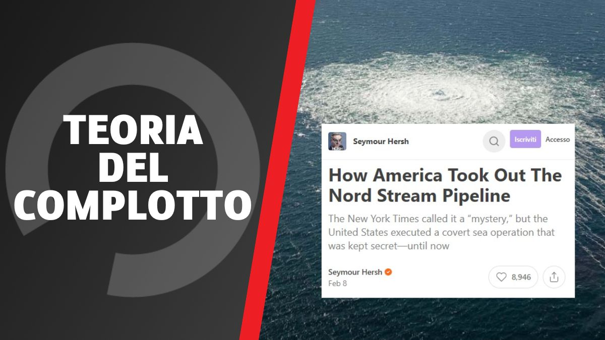
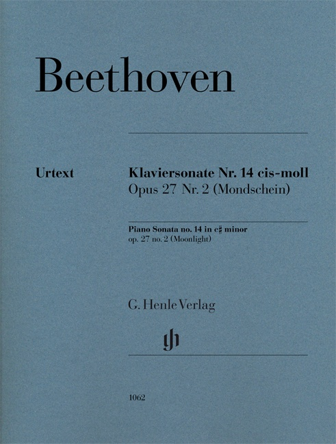
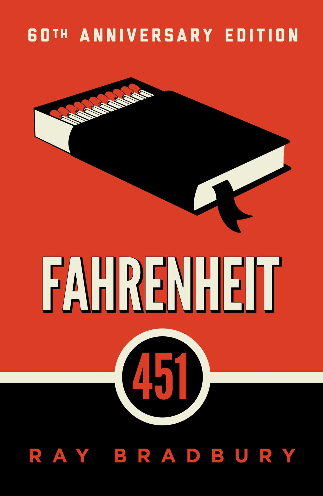

51:50 · 8 OPERE
Decostruire l'ovvio.
Il filo del discorso
Il contributo accosta due modi di intendere la conoscenza: il lavoro lento e sistematico rappresentato dai Principia Mathematica e la circolazione delle notizie nel presente. Il relatore celebra Russell, Whitehead e altre figure che associa alla ricerca e all’impegno morale, poi passa alla controversia sul sabotaggio dei gasdotti Nord Stream. Difende l’inchiesta di Seymour Hersh e interpreta la pubblicazione su Substack come un segno della trasformazione della stampa. L’esame della polemica si intreccia con ricordi personali su libri, editoria, interviste e riconoscimenti: per il relatore, il rischio è che visibilità e appartenenza sostituiscano il contenuto. La parte finale torna al valore durevole dell’opera culturale attraverso un aneddoto su Beethoven e il richiamo a Fahrenheit451. La scheda distingue il prestigio di un autore dalla verifica di un singolo articolo, la censura dalla critica e l’indizio dalla prova. Precisa inoltre alcuni riferimenti che il parlato sovrappone: il trattato di Russell e Whitehead non coincide con I principi della matematica del solo Russell; il percorso professionale di un giornalista non va ricostruito mescolando biografie. Il titolo riassume la proposta del contributo: interrogare ciò che appare ovvio, mantenendo però la stessa disponibilità alla verifica anche verso la propria ricostruzione.
I libri nel discorso

Principia Mathematica
Copertina del volume I: Cambridge University Press · copertina del volume I
Immagine autentica del volume I, titolo e autori leggibili. La voce bibliografica comprende l’opera in tre volumi, ma la fotografia non mostra un cofanetto completo. Non si assegna alla singol’immagine l’ISBN dell’insieme o una ristampa non accertata.
Tre volumi, Whitehead e Russell espliciti. Data complessiva 1910–13 distinta da Principles 1903 e da Newton.
Passaggio 2:10 ↗ · Fonti e libro ↗
La società del contrario
Copertina: Zambon · 2005
Copertina autentica dell’edizione di riferimento, controllata visivamente. Non identifica l’esemplare letto o citato nel video.
La società del contrario nominato come proprio volume.
Passaggio 8:38 ↗ · Fonti e libro ↗
Bibbia
Identificazione probabile
Copertina: San Paolo, 2014 · Nuova Versione dai Testi Antichi · edizione di riferimento
Servi a cavallo e principi a piedi richiamano Qoèlet/Ecclesiaste10:7; successivamente Vangeli espliciti.
Passaggio 8:53 ↗ · Fonti e libro ↗
Sixteen Questions on the Assassination
Identificazione probabile
Fotografia dell’opuscolo: FOTOGRAFIA DELL’OPUSCOLO che riproduce l’articolo apparso in The Minority of One, settembre 1964, pagine 6–8. Il foglio fotografato reca titolo, autore e indicazione della ristampa dal numero di settembre; copyright 1964 The Minority of One. Non è una copertina di raccolta successiva e non si assegna un giorno preciso alla pubblicazione.
Fotografia integrale del fronte dell’opuscolo, con indicazione della rivista originaria; non copertina di un volume autonomo.
Documento Russell sull’assassinio Kennedy senza titolo; riferimento probabile alle Sixteen Questions.
Passaggio 9:47 ↗ · Fonti e libro ↗
L’ombra del sabotaggio su Nord Stream: l’infondato articolo del Pulitzer Hersh che incolpa Usa e Norvegia
Illustrazione originale dell’articolo di Open: Open,14 febbraio 2023; pagina con aggiornamenti successivi. Grafica originale illustrativa dell’articolo, non copertina libraria.
La scritta nella grafica appartiene alla testata; immagine non utilizzata come copertina dell’articolo di Hersh.
Open e David Puente nominati.
Passaggio 30:19 ↗ · Fonti e libro ↗
Beffe e beffatori in nome di una crisi
Identificazione probabile
Copertina: Lulu, 2021
Titolo imperfetto nella trascrizione automatica e tema della crisi corrispondono al volume già presente.
Passaggio 35:00 ↗ · Fonti e libro ↗
Sonata per pianoforte n. 14 in do diesis minore, op. 27 n. 2 (Al chiaro di luna)
Copertina dello spartito: Composta nel 1801, prima edizione Cappi, Vienna, marzo 1802, titolo Sonata quasi una Fantasia. Copertina dello spartito G. Henle HN 1062, a cura di Murray Perahia e Norbert Gertsch, diteggiatura Perahia, ISMN 9790201810621.
Copertina autentica dello spartito Urtext HN 1062, non di un disco, un libro sul compositore o una edizione identificata nel video. Il soprannome Al chiaro di luna è successivo alla composizione.
Guicciardi e sonata Alchiaro di Luna riconoscibili, non una sinfonia dedicata a Metternich.
Passaggio 49:54 ↗ · Fonti e libro ↗
Fahrenheit 451
Copertina: Edizione inglese Simon & Schuster, ISBN 9781451673265; immagine editoriale con dicitura 60th Anniversary Edition.
Immagine autentica fornita dall’editore per ISBN 9781451673265, con grafica del sessantesimo anniversario. La scheda commerciale riporta 10 gennaio 2012; tale data non viene usata per retrodatare la grafica anniversario né confusa con la prima pubblicazione del romanzo nel 1953. Nessuna edizione mostrata dal relatore è qui identificata.
Fahrenheit e Ray Bradbury evocati per i custodi della memoria culturale.
Passaggio 50:12 ↗ · Fonti e libro ↗